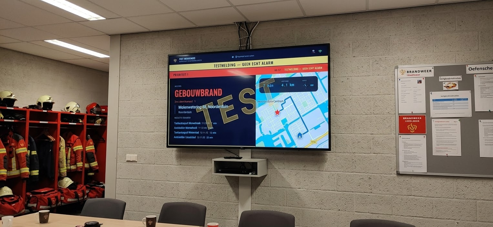

Uit de dagelijkse praktijk
De melding staat op het scherm voor de deur van de garage open is.
Het P2000 scherm toont de melding, de ingezette eenheden en de rijtijd op de tv, binnen een seconde na alarmering. Dezelfde werking is ook toepasbaar voor ambulancediensten.

In de kazerne
Zo ziet het scherm eruit tijdens een dienst.
Dit zijn schermen zoals ze nu al draaien op een post, tijdens een echte dienst.
Zichtbaar voor iedereen op de post, de hele dienst door.
Klok, dienst en meldingen tot nu toe.
Het scherm springt meteen om naar de melding.

Type melding, adres, voertuigen en rijtijd. Direct leesbaar.

Zelfde opbouw, andere kleurcode. Geen twijfel over de urgentie.
Hoe het werkt
Vier dingen die het verschil maken op een drukke dienst.
Binnen een seconde in beeld
De melding komt rechtstreeks binnen en verschijnt vrijwel meteen op de tv. Geen ververste pagina, geen vertraging.
In één oogopslag duidelijk
Prioriteit in kleur, adres, ingezette voertuigen en rijtijd van alle gealarmeerde voertuigen. Alles wat nodig is voordat de wagen de garage uit is. Ook de rijroute is zichtbaar, inclusief busbanen, mits ondersteund.
Ook voor ambulancediensten
Dezelfde werking, aangepast aan die praktijk: melding, eenheden en rijtijd op het scherm op de ambulancepost.
Rooster en dagbezetting
Naast meldingen kan het scherm ook het dienstrooster en de dagbezetting tonen, zodat in één oogopslag duidelijk is wie er die dienst draait.
Het tonen van rooster en dagbezetting is afhankelijk van de roostersoftware die al binnen de organisatie in gebruik is.
Waarom RB Data Solutions
Ontwikkeld vanuit de dagelijkse praktijk, niet achter een bureau.
Het kazernescherm is niet bedacht op een tekentafel. Het is ontstaan uit de dagelijkse praktijk op een post en wordt nog steeds op diezelfde manier doorontwikkeld, dienst na dienst.
“Het scherm moest er niet mooi uitzien voor een demo. Het moest werken op de dienst waarop het er echt toe doet.”
Adviesgesprek aanvragen
Benieuwd of dit ook op jouw post werkt?
Twee korte stappen. Geen verkooppraatje, maar een gesprek over de meldkamer, de tv en wat daar wel of niet bij past.